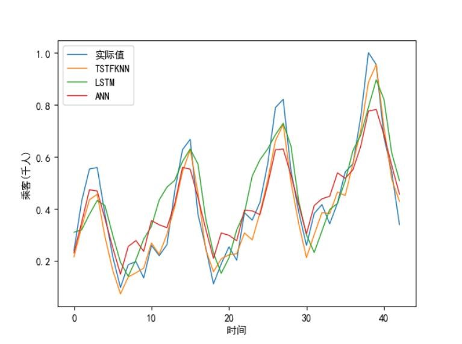

核心算法
Main Algorithm
1.YOLOv5卷积神经网络
在对密切接触人员进行分级后，使用成熟的虹软视觉开放平台API对确定的密接人员进行身份识别和身份信息的查询，并将信息进行AES加密导出，方便防疫工作者点对点的对不同等级的密切接触者采取分层管理和流行病学调查。

2.FastReID
是一个基于PyTorch的目标重识别（ReID）开源库，提供了针对ReID任务的完整的工具箱，包括训练、评估、微调和模型部署，另外实现了在多个任务中的最先进的模型。

3.DeepSort算法
DeepSort中使用更加可靠的度量来代替关联度量，能够使用卷积神经网络在大规模行人数据集进行训练，并提取特征，增加网络对遗失和障碍的鲁棒性。综因此合性能和效率，DeepSort算法比较适合当前场景

4.TSTF-KNN人脸匹配算法
人脸识别中最重要的一个过程为人脸匹配，人脸匹配部分一般会将提取出来的人脸特征向量与数据库中的人脸进行对比，如果特征向量的距离较近或者相似度较高，则输出人脸对应的身份信息；如果对于数据库中的所有人脸都不匹配，则输出无法识别。
TSTF-KNN算法相对于与其他人脸匹配算法具有速度较快，精准度较高的优势，在人脸匹配领域使用广泛，如图为TSTF-KNN算法在IAP数据集中的表现对比。
